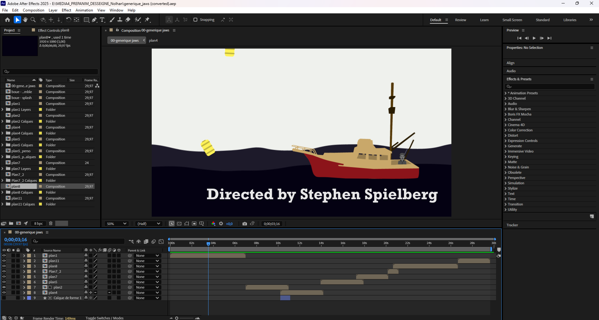
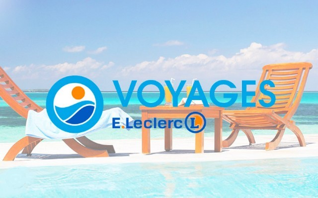
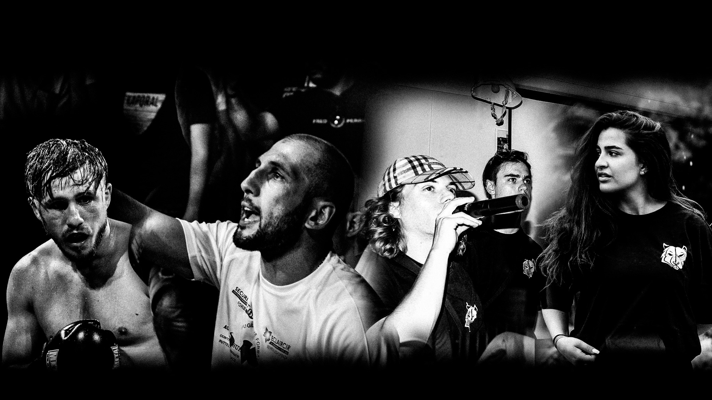

My Projects

Jaws Opening Credits Reimagined
As part of a university project, I reinterpreted the opening credits of Jaws by integrating my artistic vision. While respecting the tense atmosphere and underlying threat of the film, I explored visual and sound contrasts to create a personal graphic universe.

Internship at Leclerc Voyages
Internship at Leclerc Voyages, during which I designed graphic materials, conducted video shoots and editing. I strengthened my skills in After Effects, Photoshop, Illustrator, Canva, and Premiere Pro, while discovering how businesses function and their workplace dynamics.

Internship at Wolfdog Production
Internship at Wolfdog Production, where I conducted video editing and filming. I developed my skills in Blender, After Effects and Premiere Pro, while discovering the workplace environment.
Insanitation Teaser Video
University project completed as a team of three, in partnership with graphic designers from Austin Community College (ACC). We designed visual communication (print, web) for a video game developed by ACC students. I created the video teaser for their video game in motion design.
Europe on the Defensive Trailer
Creation of a trailer for the CUEJ web documentary, "Europe on the Defensive". Using images and editing provided by CUEJ students (University Center for Journalism Education). This trailer aimed to tease the website where their various articles on European defense were published. CUEJ site https://cuej.info/mini-sites/europe2024/
QLIO Flextory Report
Creation of a short film as a team. Following certain guidelines, we wrote a screenplay and shot different sequences. Then, I participated in editing the shots, ensuring the short film was dynamic, with music suited to different parts of the video.
Alsace Nautile Club Report
Creation of a video by group in collaboration with Alsace Nautile Club. Following their expectations, I framed different shots according to the rule of thirds while accounting for empty spaces and lighting. I then edited the shots.